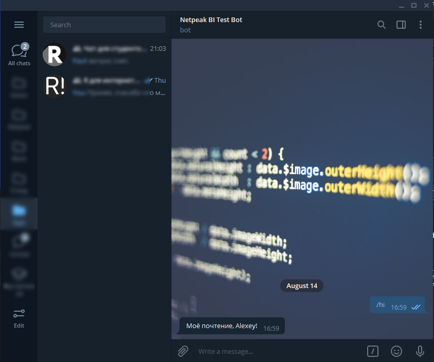
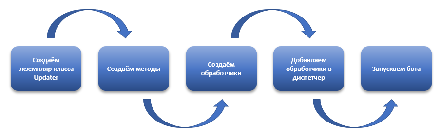
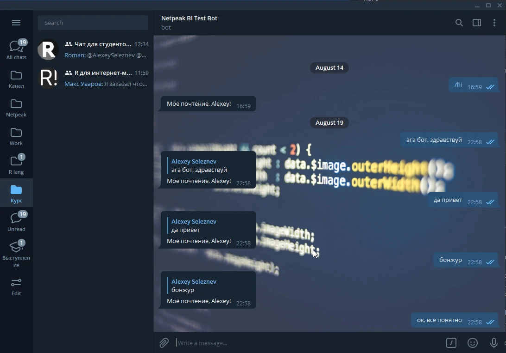
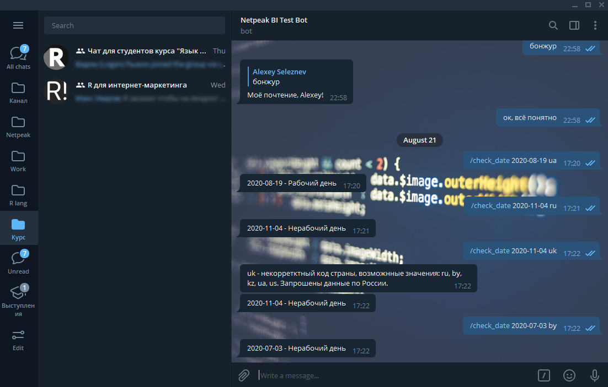

Пишем telegram бота на языке R (часть 2): Добавляем боту поддержку команд и фильтры сообщений
В предыдущей публикации мы разобрались как создать бота, инициализировали экземпляр класса Bot и ознакомились с методами отправки сообщений с его помощью.
В этой статье я продолжаю данную тему, поэтому приступать к чтению данной статьи я рекомендую только после прочтения первой части.
В этот раз мы разберёмся как оживить нашего бота и добавим ему поддержку команд, а также познакомимся с классом Updater.
В ходе статьи мы напишем нескольких простых ботов, последний будет по заданной дате и коду страны определять является ли день в данной стране выходным или рабочим согласно производственного календаря. Но, как и прежде цель статьи ознакомить вас с интерфейсом пакета telegram.bot для решения ваших собственных задач.

Все статьи из серии “Пишем telegram бота на языке R”
- Создаём бота, и отправляем с его помощью сообщения в telegram
- Добавляем боту поддержку команд и фильтры сообщений
- Как добавить боту поддержку клавиатуры
- Построение последовательного, логического диалога с ботом
- Управление правами пользователей бота
Содержание
Если вы интересуетесь анализом данных возможно вам будут интересны мои telegram и youtube каналы. Большая часть контента которых посвящены языку R.
- Класс Updater
- Handlers — обработчики
- Добавляем первую команду боту, обработчик команд
- Обработчик текстовых сообщений и фильтры
- Добавление команд с параметрами
- Запускаем бота в фоновом режиме
- Заключение
Класс Updater
Updater — это класс, который упрощает вам разработку телеграм бота, и использует под капотом класс Dispetcher. Назначение класса Updater заключается в том, что бы получить обновления от бота (в предыдущей статье мы использовали для этой цели метод getUpdates()), и передать их далее в Dispetcher.
В свою очередь Dispetcher содержит в себе созданные вами обработчики, т.е. объекты класса Handler.
Handlers — обработчики
С помощью обработчиков вы добавляете в Dispetcher реакции бота на различные события. На момент написания статьи в telegram.bot добавлены следующие типы обработчиков:
- MessageHandler — Обработчик сообщений
- CommandHandler — Обработчик команд
- CallbackQueryHandler — Обработчик данных отправляемых из Inline клавиатур
- ErrorHandler — Обработчик ошибок при запросе обновлений от бота
Добавляем первую команду боту, обработчик команд
Если вы никогда ранее не использовали ботов, и не в курсе, что такое команда, то команды боту необходимо отправлять с помощью прямого слеша / в качестве префикса.
Начнём мы с простых команд, т.е. научим нашего бота здороваться по команде /hi.
Код 1: Учим бота здороваться
library(telegram.bot)
# создаём экземпляр класса Updater
updater <- Updater('ТОКЕН ВАШЕГО БОТА')
# Пишем метод для приветсвия
say_hello <- function(bot, update) {
# Имя пользователя с которым надо поздароваться
user_name <- update$message$from$first_name
# Отправка приветственного сообщения
bot$sendMessage(update$message$chat_id,
text = paste0("Моё почтение, ", user_name, "!"),
parse_mode = "Markdown")
}
# создаём обработчик
hi_hendler <- CommandHandler('hi', say_hello)
# добаляем обработчик в диспетчер
updater <- updater + hi_hendler
# запускаем бота
updater$start_polling()
Запустите приведённый выше пример кода, предварительно заменив ‘ТОКЕН ВАШЕГО БОТА’ на реальный токен, который вы получили при создании бота через BotFather (о создании бота я рассказывал в первой статье).
Метод start_polling() класса Updater, который используется в конце кода, запускает бесконечный цикл запроса и обработки обновлений от бота.
Теперь откроем телеграм, и напишем нашему боту первую команду /hi.

Теперь наш бот понимает команду /hi, и умеет с нами здороваться.
Схематически процесс построения такого простейшего бота можно изобразить следующим образом.

- Создаём экземпляр класса
Updater; - Создаём методы, т.е. функции которые будет выполнять наш бот. В примере кода это функция
say_hello(). Функции, которые вами будут использоваться как методы бота должны иметь два обязательных аргумента — bot и update, и один необязательный — args. Аргумент bot, это и есть ваш бот, с его помощью вы можете отвечать на сообщения, отправлять сообщения, или использовать любые другие доступные боту методы. Аргумент update это то, что бот получил от пользователя, по сути, то что в первой статье мы получали методомgetUpdates(). Аргумент args позволяет вам обрабатывать дополнительные данные отправленные пользователем вместе с командой, к этой теме мы ещё вернёмся немного позже; - Создаём обработчики, т.е. связываем какие-то действия пользователя с созданными на прошлом шаге методами. По сути обработчик это триггер, событие которое вызывает какую-то функцию бота. В нашем примере таким триггером является отправка команды
/hi, и реализуется командойhi_hendler <- CommandHandler('hi', say_hello). Первый аргумент функцииCommandHandler()позволяет вам задать команду, в нашем случаеhi, на которую будет реагировать бот. Второй аргумент позволяет указать метод бота, мы будем вызывать методsay_hello, который будет выполняться если пользователь вызвал указанную в первом аргументе команду; - Далее добавляем созданный обработчик в диспетчер нашего экземпляра класса
Updater. Добавлять обработчики можно несколькими способами, в примере выше я использовал простейший, с помощью знака+, т.е.updater <- updater + hi_hendler. То же самое можно сделать с помощью методаadd_handler(), который относится к классуDispatcher, найти этот метод можно так:updater$dispatcher$add_handler(); - Запускаем бота с помощью команды
start_polling().
Обработчик текстовых сообщений и фильтры
Как отправлять боту команды мы разобрались, но иногда нам требуется, что бы бот реагировал не только на команды, но и на какие-то обычные, текстовые сообщения. Для этого необходимо использовать обработчики сообщений — MessageHandler.
Обычный MessageHandler будет реагировать на абсолютно все входящие сообщения. Поэтому зачастую обработчики сообщений используются вместе с фильтрами. Давайте научим бота здороваться не только по команде /hi, но и всегда, когда в сообщении отправленном боту встречается одно из следующих слов: привет, здравствуй, салют, хай, бонжур.
Пока мы не будем писать какие-то новые методы, т.к. у нас уже есть метод с помощью которого бот с нами здоровается. От нас требуется только создать нужный фильтр и обработчик сообщений.
Код 2: Добавляем обработчик текстовых сообщений и фильтр
library(telegram.bot)
# создаём экземпляр класса Updater
updater <- Updater('ТОКЕН ВАШЕГО БОТА')
# Пишем метод для приветсвия
## команда приветвия
say_hello <- function(bot, update) {
# Имя пользователя с которым надо поздароваться
user_name <- update$message$from$first_name
# Отправляем приветсвенное сообщение
bot$sendMessage(update$message$chat_id,
text = paste0("Моё почтение, ", user_name, "!"),
parse_mode = "Markdown",
reply_to_message_id = update$message$message_id)
}
# создаём фильтры
MessageFilters$hi <- BaseFilter(function(message) {
# проверяем, встречается ли в тексте сообщения слова: привет, здравствуй, салют, хай, бонжур
grepl(x = message$text,
pattern = 'привет|здравствуй|салют|хай|бонжур',
ignore.case = TRUE)
}
)
# создаём обработчик
hi_hendler <- CommandHandler('hi', say_hello) # обработчик команды hi
hi_txt_hnd <- MessageHandler(say_hello, filters = MessageFilters$hi)
# добаляем обработчики в диспетчер
updater <- updater +
hi_hendler +
hi_txt_hnd
# запускаем бота
updater$start_polling()
Запустите приведённый выше пример кода, предварительно заменив ‘ТОКЕН ВАШЕГО БОТА’ на реальный токен, который вы получили при создании бота через BotFather (о создании бота я рассказывал в первой статье).
Теперь попробуем отправить боту несколько сообщений, в которых будут встречаться перечисленные ранее слова приветствия:

Итак, в первую очередь мы научили бота не просто здороваться, а отвечать на приветствие. Сделали мы это с помощью аргумента reply_to_message_id, который доступен в методе sendMessage(), в который необходимо передать id сообщения на которое требуется ответить. Получить id сообщения можно вот так: update$message$message_id.
Но главное, что мы сделали — добавили боту фильтр с помощью функции BaseFilter():
# создаём фильтры
MessageFilters$hi <- BaseFilter(
# анонимная фильтрующая функция
function(message) {
# проверяем, встречается ли в тексте сообщения слова приветствия
grepl(x = message$text,
pattern = 'привет|здравствуй|салют|хай|бонжур',
ignore.case = TRUE)
}
)
Как вы могли заметить, фильтры необходимо добавлять в объект MessageFilters, в котором изначально уже есть небольшой набор готовых фильтров. В нашем примере в объект MessageFilters мы добавили элемент hi, это новый фильтр.
В функцию BaseFilter() вам необходимо передать фильтрующую функцию. По сути, фильтр — это просто функция, которая получает экземпляр сообщения и возвращает TRUE или FALSE. В нашем примере, мы написали простейшую функцию, которая с помощью базовой функции grepl() проверяет текст сообщения, и если он соответствует регулярному выражению привет|здравствуй|салют|хай|бонжур возвращает TRUE.
Далее мы создаём обработчик сообщений hi_txt_hnd <- MessageHandler(say_hello, filters = MessageFilters$hi). Первый аргумент функции MessageHandler() — метод, который будет вызывать обработчик, а второй аргумент — это фильтр по которому он будет вызываться. В нашем случае это созданный нами фильтр MessageFilters$hi.
Ну и в итоге, мы добавляем в диспетчер созданный только, что обработчик hi_txt_hnd.
updater <- updater +
hi_hendler +
hi_txt_hnd
Как я уже писал выше, в пакете telegram.bot и объекте MessageFilters уже есть набор встроенных фильтров, которые вы можете использовать:
- all — Все сообщения
- text — Текстовые сообщения
- command — Команды, т.е. сообщения которые начинаются на
/ - reply — Сообщения, которые являются ответом на другое сообщение
- audio — Сообщения в которых содержится аудио файл
- document — Сообщения с отправленным документом
- photo — Сообщения с отправленными изображениями
- sticker — Сообщения с отправленным стикером
- video — Сообщения с видео
- voice — Голосовые сообщения
- contact — Сообщения в которых содержится контант телеграм пользователя
- location — Сообщения с геолокацией
- venue — Пересылаемые сообщения
- game — Игры
Если вы хотите совместить некоторые фильтры в одном обработчике просто используйте знак | — в качестве логического ИЛИ, и знак & в качестве логического И. Например, если вы хотите что бы бот вызывал один и тот же метод когда он получает видео, изображение или документ используйте следующий пример создания обработчика сообщений:
handler <- MessageHandler(callback,
MessageFilters$video | MessageFilters$photo | MessageFilters$document
)
Добавление команд с параметрами
Мы уже знаем, что такое команды, как их создавать и как заставить бота выполнить нужную команду. Но в некоторых случаях помимо названия команды, нам необходимо передать некоторые данные для её выполнения.
Ниже пример бота, который по заданной дате и стране возвращает вам тип дня из производственного календаря.
Приведённый ниже бот использует API производственного календаря isdayoff.ru.
Код 3: Бот, который сообщает по дате и стране
library(telegram.bot)
# создаём экземпляр класса Updater
updater <- Updater('ТОКЕН ВАШЕГО БОТА')
# Пишем метод для приветсвия
## команда приветвия
check_date <- function(bot, update, args) {
# входящие данные
day <- args[1] # дата
country <- args[2] # страна
# проверка введённых параметров
if ( !grepl('\\d{4}-\\d{2}-\\d{2}', day) ) {
# Send Custom Keyboard
bot$sendMessage(update$message$chat_id,
text = paste0(day, " - некорреткная дата, введите дату в формате ГГГГ-ММ-ДД"),
parse_mode = "Markdown")
} else {
day <- as.Date(day)
# переводим в формат POSIXtl
y <- format(day, "%Y")
m <- format(day, "%m")
d <- format(day, "%d")
}
# страна для проверки
## проверяем задана ли страна
## если не задана устанавливаем ru
if ( ! country %in% c('ru', 'ua', 'by', 'kz', 'us') ) {
# Send Custom Keyboard
bot$sendMessage(update$message$chat_id,
text = paste0(country, " - некорретктный код страны, возможнные значения: ru, by, kz, ua, us. Запрошены данные по России."),
parse_mode = "Markdown")
country <- 'ru'
}
# запрос данных из API
# компоновка HTTP запроса
url <- paste0("https://isdayoff.ru/api/getdata?",
"year=", y, "&",
"month=", m, "&",
"day=", d, "&",
"cc=", country, "&",
"pre=1&",
"covid=1")
# получаем ответ
res <- readLines(url)
# интрепретация ответа
out <- switch(res,
"0" = "Рабочий день",
"1" = "Нерабочий день",
"2" = "Сокращённый рабочий день",
"4" = "covid-19",
"100" = "Ошибка в дате",
"101" = "Данные не найдены",
"199" = "Ошибка сервиса")
# отправляем сообщение
bot$sendMessage(update$message$chat_id,
text = paste0(day, " - ", out),
parse_mode = "Markdown")
}
# создаём обработчик
date_hendler <- CommandHandler('check_date', check_date, pass_args = TRUE)
# добаляем обработчик в диспетчер
updater <- updater + date_hendler
# запускаем бота
updater$start_polling()
Запустите приведённый выше пример кода, предварительно заменив ‘ТОКЕН ВАШЕГО БОТА’ на реальный токен, который вы получили при создании бота через BotFather (о создании бота я рассказывал в первой статье).
Мы создали бота, который в арсенале имеет всего один метод check_date, данный метод вызывается одноимённой командой.
Но, помимо имени команды, данный метод ждёт от вас введения двух параметров, код страны и дату. Далее бот проверяется, является ли заданный день в указанной стране выходным, сокращённым или рабочим согласно официального производственного календаря.
Что бы создаваемый нами метод принимал дополнительные параметры вместе с командой, используйте аргумент pass_args = TRUE в функции CommandHandler(), и при создании метода, помимо обязательных аргументов bot, update создайте опциональный — args. Созданный таким образом метод будет принимать параметры, которые вы передаёте боту после названия команды. Параметры необходимо между собой разделять пробелом, в метод они поступят в виде текстового вектора.
Давайте запустим, и протестируем нашего бота.

Запускаем бота в фоновом режиме
Последний шаг который нам осталось выполнить — запустить бота в фоновом режиме.
Для этого следуйте по описанному ниже алгоритму:
- Сохраните код бота в файл с расширением R. При работе в RStudio это делается через меню File, командой Save As….
- Добавьте путь к папке bin, которая в свою очередь находится в папке в которую вы установили язык R в переменную Path, инструкция тут.
- Создайте обычный текстовый файл, в котором пропишите 1 строку:
R CMD BATCH C:\Users\Alsey\Documents\my_bot.R. Вместо C:\Users\Alsey\Documents\my_bot.R пропишите путь к своему скрипту бота. При этом важно, что бы в пути не встречалась кириллица и пробелы, т.к. это может вызвать проблемы при запуске бота. Сохраните его, и замените его расширение с txt на bat. - Откройте планировщик заданий Windows, есть множество способов это сделать, например откройте любую папку и в адресс введите
%windir%\system32\taskschd.msc /s. Другие способы запуска можно найти тут. - В верхнем правом меню планировщика нажмите “Создать задачу…”.
- На вкладке “Общие” задайте произвольное имя вашей задаче, и переключатель перевидите в состояние “Выполнять для всех пользователей”.
- Перейдите на вкладку “Действия”, нажмите “Создать”. В поле “Программа или сценарий” нажмите “Обзор”, найдите созданный на втором шаге bat файл, и нажмите ОК.
- Жмём ОК, при необходимости вводим пароль от вашей учётной записи операционной системы.
- Находим в планировщике созданную задачу, выделяем и в нижнем правом углу жмём кнопку “Выполнить”.
Наш бот запущен в фоновом режиме, и будет работать до тех пор, пока вы не остановите задачу, или не выключите ваш ПК или сервер на котором его запустили.
Заключение
В этой статье мы разобрались как написать полноценного бота, который не только умеет отправлять сообщения, но и реагировать на входящие сообщения и команды. Полученных знананий уже достаточно для решения большинства ваших задач.
В следующей статье речь пойдёт о том, как добавить боту клавиатуру, для более удобной работы.